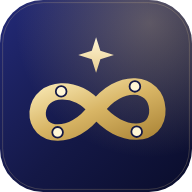

One safe, friendly place where every student can ask boldly, answer together and innovate endlessly.
Loopy Brains started as a small doubt board for one college, so students who were afraid to ask in class could ask each other. Students used it, teachers trusted it, and it grew into a study community for campuses across India.
We are students and teachers who believe a good question is never silly and a good answer should never be hard to find. Built by students, for students.
The board, quizzes, Study Lab and stories are free forever. We offer an optional Loopy Brains Plus plan for extras like mock tests, the AI study helper and the paper vault, and a college plan so a college can provide Plus to all its students. We never show ads and never sell student data.
Yes. The core board and learning tools are free. Plus is optional.
Only students signed in to the same college board, and only the name you choose. Your email is never shown to others.
No. See the Privacy Policy for exactly what is stored and who processes it.
Use the report option on any post. You can also write to us using the contact below.
Write to us from the email you used and we will remove it. Details are in the Privacy Policy.
We read every message. Vijay M · v.bhaskar462@gmail.com · Visakhapatnam, India
Loopy Brains is an independent student community. It is not run, owned or endorsed by any college or university, and names, initials and logos of colleges are used only to show which college a board is for, unless a college states otherwise.